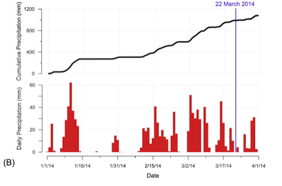
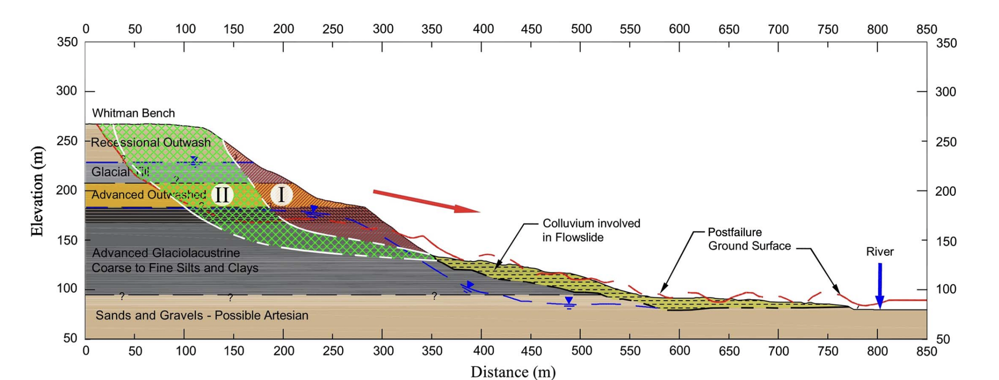

The conditions preceding the Oso Landslide were abnormal. Atmospheric modeling shows higher precipitation levels across the Pacific Northwest starting on February 11, 2014. In addition, in the three weeks leading up to the slide, precipitation was at a level not seen in 88 years. Finally, soil samples from the slope were reconstructed and showed high moisture. These conditions were a major driver of the slide, as the accumulation of water was too much for the slope to be stable.
 The failure mechanism for the Oso Landslide had two parts. The first part, highlighted in red, failed and flowed downslope before coming into contact with the back part of the colluvium deposit. This deposit, already having been saturated by the rains that year, was extremely liquid and mobilized once pushed by the first part of the landslide. This series of events is what was responsible for the extreme runout and damage caused by the slide. The second part of the slide then occurred, which involved much more of the slope, but was stopped before it could cause damage. This was partly due to the small hill created by the accumulation of the phase one slide at the bottom of the slope and partly because the second phase wasn't liquid enough.